UNIT 05
第五单元
以立意为宗，不以能文为本。——[梁] 萧统
学习目标
- 体会文章是怎样围绕中心意思来写的。
- 从不同方面或选取不同事例，表达中心意思。
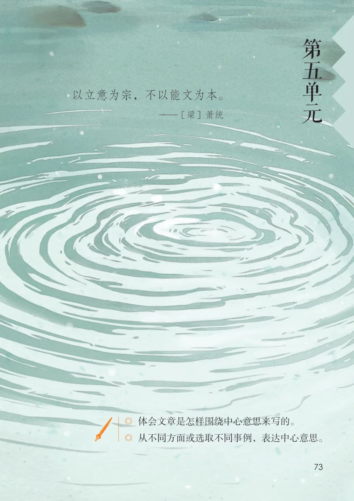
单元导语 · 教材第 73 页
单元导语与学习目标
教材第 73 页
查看原页第
五以立意为宗，不以能文为本。
— [梁] 萧统单
元
◎ 体会文章是怎样围绕中心意思来写的。
◎ 从不同方面或选取不同事例，表达中心意思。
课文 · 教材第 74–75 页
16 夏天里的成长
教材第 74 页
查看原页16夏天里的成长
夏天是万物迅速生长的季节。生物从小到大，本来是天天长的，不过夏天的长是飞快的长，跳跃的长，活生生的看得见的长。你在棚架上看瓜藤，一天可以长出几寸；你到竹子林、高粱地里听声音，在叭叭的声响里，一夜可以多出半节。昨天是苞蕾，今天是鲜花，明天就变成了小果实。一块白石头，几天不见，就长满了苔藓；一片黄泥土，几天不见，就变成了草坪菜畦。邻家的小猫小狗小鸡小鸭，个把月不过来，再见面，它已经有了妈妈的一半大。
本文作者梁容若，选作课文时有改动。
教材第 75 页
查看原页草长，树木长，山是一天一天地变丰满。稻秧长，甘蔗长，地是一天一天地高起来。水长，瀑布长，河也是一天一天地变宽变深。俗话说：“不热不长，不热不大。”随着太阳威力的增加，温度的增加，什么都在生长。最热的时候，连铁路的铁轨也长，把连接处的缝隙几乎填满。柏油路也软绵绵的，像是高起来。
一过夏天，小学生有的成了中学生，中学生有的成了大学生。升级、跳班，快点儿，慢点儿，总是要长。北方农家的谚语说：
“六月六，看谷秀。”又说：“处暑不出头，割谷喂老牛。”农作物到了该长的时候不长，或是长得太慢，就没有收成的希望。人也是一样，要赶时候，赶热天，尽量地用力地长。
棚苔藓坪蔗瀑增缝谚默读课文，找出中心句，说说课文是怎样围绕这句话来写的。第2自然段写出了生物在夏天里飞快生长的状态。读一读，说说写到了哪些动植物，是怎样体现这一段的中心意思的。
课文 · 教材第 76–80 页
17 盼
教材第 76 页
查看原页17盼
有一天，妈妈下班回来，递给我一个扁扁的纸盒子。我打开一看，是一件淡绿色的、透明的新雨衣。我立刻就抖开雨衣往身上穿。怎么？雨衣上竟然还长着两只袖筒，不像那种斗篷式的：手在雨衣里缩着，什么也干不了。穿上这件情况就不同了，管你下雨不下雨，想干什么就干什么。
我一边想，一边在屋里走来走去，戴上雨帽，又抖抖袖子，把雨衣弄得窸窸窣窣响。直到妈妈一声喊：“蕾蕾，你疯啦？嫌身上没长痱子吗？”我才赶忙把雨衣脱下来。摸摸后背，衬衫已经让汗水浸湿了，浑身凉冰冰的。
我开始盼着变天。可是一连好多天，白天天上都是瓦蓝瓦蓝的，夜晚又变成满天星斗。我的雨衣一直安安静静地躺在盒子里，盒子一直安安静静地躺在衣柜里。每天放学路上我都在想：太阳把天烤得这样干，还能长云彩吗？为什么我一有了雨衣，天气预报就总是“晴”呢？
有一天，快到家时，路边的小杨树忽然沙啦啦地喧闹起来，就像在嘻嘻地笑。还用问，这是起了风。一会儿，几朵厚墩墩的云彩飘游过来，把太阳也给遮盖住了。天一下子变了脸色。路上行人都加快了走路的速度，我却放慢了脚步，心想，雨点儿打在头上，才是世界上最美的事呢！果然，随着几声闷雷，头顶上真的落上了几本文作者铁凝，选作课文时有改动。
教材第 77 页
查看原页个雨点儿。我又伸手试了试周围，手心里也落上了两三个雨点儿。我兴奋地仰起头，甩打着书包就大步跑进了楼门。“妈妈！”我嚷着奔进厨房。
“蕾蕾回来得正好，快把头发擦擦，准备听英语讲座！”“可是……还差半小时啊。”我嘟囔着，心想，你怎么就不向窗外看一眼呢？
“那就休息一下。”妈妈说完，只听吱的一声响，原来她正往热油锅里放蒜薹呢。“我今天特别特别不累。妈妈，我给你买酱油去吧，啊？”我央求着。
“你看，酱油我下班带回来了。”妈妈冲我笑了笑，好像猜着了我的心思。“可是……不是还要炖肉吗？炖肉得放好多好多酱油呢。”我一边说，一边用眼瞟着窗外，生怕雨停了。
“我什么时候说过要炖肉？”妈妈焖上米饭，转过身来看了我两眼。“你没说，爸爸可说过。”这话一出口，我就脸红了。因为我没见爸爸，也没人告诉我要炖什么肉。
“真的吗？”妈妈问。我不再说话，也不敢再去看妈妈，急忙背过身子盯住碗架，上边的瓶瓶罐罐确实满满当当，看来不会有出去买东西的希望了。
再看看屋里的闹钟，六点二十，我只好打开电视，不声不响地听英语讲座。吃过晚饭，雨还在不停地下着，嗒嗒嗒地打着玻璃窗，好像是敲着鼓点逗引我出去。我跑到窗前，不住地朝街上张望着。望着望
教材第 78 页
查看原页着又担心起来：要是今天雨都下完了，那明天还有雨可下吗？最好还是留到明天吧。说来也怪，雨果真像我希望的那样停了。四周一下子变得那样安静。我推开窗子，凉爽的空气扑了过来，还带点儿腥味。路灯照着大雨冲刷过的马路，马路上像铺了一层明晃晃的玻璃；路灯照着路旁的小杨树，小杨树上像挂满了珍珠玛瑙。可雨点儿要是淋在淡绿色的雨衣上呢，那一定比珍珠玛瑙还好看。我扑到自己的床上，一心想着明天雨点儿打在雨衣上的事。
第二天早晨一睁眼，四周还是静悄悄的。我决心不再想什么雨不雨的。谁知等我背着书包走到街上，脑门又落上了几滴水珠。我还以为是树上掉下来的，直到我仰着头躲开树，甜丝丝的雨点儿又滴到我嘴唇上时，我的心才又像要从嗓子里蹦出来一样。我几步跑回家，理直气壮地打开柜门，拿出雨衣冲妈妈说：“妈妈，下呢，还在下呢！”
妈妈一歪头冲我笑了笑，帮我系好扣，戴上帽子。我挺着脖子，小心翼翼地跑下了楼梯。我走在街上，甩着两只透明的绿袖子，觉得好像雨点儿都特别爱往我的雨衣上落。它们在我的头顶和肩膀上起劲地跳跃：滴答，滴答滴答……
教材第 79 页
查看原页袖篷缩疯瓦柜喧甩嚷蒜酱唇蹦默读课文，想想课文围绕“盼”写了“我”的哪些表现。围绕“盼”这一心理活动，课文哪些部分写得比较具体？选出写得生动的两处，说说这样写的好处。
教材第 80 页
查看原页交流平台
中心意思确立后，怎样才能把这个意思表达得更全面、更充分呢？可以围绕中心意思，从不同的方面或者选取不同的事例来写。如，《夏天里的成长》为了表现夏天是万物生长的季节，就选择了各种各样的事物作为例子，让我们深深感受到了夏日的生机与活力。
在围绕一个意思表达时，要将重要部分写得详细些、具体些，才能给读者留下更深刻的印象。如，课文《盼》紧扣“盼”字，具体写了“我”放学路上惊喜地发现下雨了，兴冲冲地跑回家，想借买酱油的机会穿上新雨衣，却未能如愿……这些具体生动的描写，让我们对“盼”的心情感同身受。
初试身手下面是一位同学围绕“戏迷爷爷”这个题目选的材料。判断一下，哪些材料可以用来表达中心意思，在后面的括号里打“√”。
◇跑了几十里地去看戏。（）
◇常给我们讲故事。（）
◇在爷爷的倡导下，街道组织了业余戏班子。（）
◇干活时会哼上两句流行歌曲。（）
◇边炒菜边做戏曲里的动作，把菜炒煳了。（）
◇到文化馆拜师学戏。（）
◇每天看书看到很晚。（）
◇一看到戏曲表演就占着电视。（）从下面的题目中选一两个，说说可以选择哪些事例或从哪些方面来写。好斗的公鸡弟弟变了闲不住的奶奶忙碌的早晨欢声笑语满校园那些温暖的时光
习作例文 · 教材第 81–83 页
习作例文：爸爸的计划、小站
教材第 81 页
查看原页习作例文
爸爸的计划我爸爸是一个工厂的计划科科长，擅长订计划。在家里，他也给我们订了计划。妈妈有学习电子技术的计划，外罗列爸爸给 pEng婆有学习烹调的计划，我有作息计划、复习功课计划，他自每个人订的计划，突出了爸爸爱订己有读书计划、读报计划、做家务计划，每个人还有如何订计划的特点。
计划的计划、如何督促各人执行计划的计划……爸爸执行计划一丝不苟。比如他的家务计划规定，每天定时开关气窗，他就照章办事，到了关气窗的时间，哪怕外面打雷下雨，雨水打湿了窗帘，打湿了写字台上他正在拟订的计划，他也是先关气窗后关门窗；又如按照他的计划，全两个典型的事例，让人印象家人九点休息，时钟敲过九下，爸爸便大声宣布：“今天各深刻。
项计划都已胜利完成，最后一项计划开始——睡觉！”在爸爸的计划之下，我能有自己的计划吗？晚上，爸爸的钥匙响过一连串的“交响乐”后，他便对我说：“烽烽，你要放暑假了，我们订一个暑假计划吧！”
一到订计划的时候，爸爸便眉飞色舞。“七时起床，八时做语文作业，九时读外语，十时……”他每写上一条，我就像又被猛抽了一下的陀螺，晕头转向。
本文作者张婴音，选作课文时有改动。
教材第 82 页
查看原页望着那长长的计划，我试探地问：“爸爸，这计划中是订暑假计划不是加一条游泳啊什么的……”这个事例，写得“什么？”爸爸仿佛不认识我似的瞪了我好一会儿，很具体。
“我订的计划是最最全面的。你看，午睡、吃饭、休息，什么都有了。”于是爸爸又订了一个如何执行计划的计划：作业由他亲自检查，午睡、吃饭由外婆监督。
默读课文，说说作者是怎么写这个爱订计划的爸爸的。小站这是一个铁路线上的小站，只有慢车才停靠两三分钟。快车转瞬间疾驰而过，旅客们甚至连站名还来不及看清楚。
就在这转瞬间，你也许看到一间红瓦灰墙的小屋，月台上几根漆成淡蓝色的木栅栏，或者还有三五个人影。而这一切又立即消失了，火车两旁依然是逼人而来的山崖和巨石。
这是一个在北方山区常见的小站。月台左面有一张红榜，上面用大字标明了二百四十一天安全无事故的记录，小站的“小”，可以从哪些语句中贴着竞赛优胜者的照片。红榜旁边是一块小黑板，上面用看出来？ 白粉笔写着当天的天气预报和早晨的报纸摘要。出站口的旁边贴着一张讲卫生的宣传画。月台上，有两三个挑着箩筐的农民，正准备上车进城。几步以外，站上的两位工作人员正在商量着什么。
月台中间有一个小小的喷水池，显然是经过精心设计本文作者袁鹰，选作课文时有改动。
教材第 83 页
查看原页的。喷水池中间堆起一座小小的假山，假山上栽着一棵尺把高的小树。喷泉从小树下面的石孔喷出来，水珠四射，把假山上的小宝塔洗得一尘不染。
月台的两头种了几株杏树，花开得正艳，引来一群蜜蜂。蜜蜂嗡嗡地边歌边舞，点缀着这个宁静的小站。小站上没有钟，也没有电铃。站长吹一长声哨子，刚到站的火车跟着长啸一声，缓缓地离开小站，继续自己的征途。
这个小站坐落在山坳里。站在月台上向四周望去，最后两段只看到光秃秃的石头山，没有什么秀丽的景色。可是就没有再写小站的在这儿，就在这个小站上，却出现了一股活泼的喷泉， “小”，这在表达几树灿烂的杏花。 上有什么作用？
这喷泉，这杏花，给旅客们带来了温暖的春意。课文要表达的中心意思是什么？是怎样一步一步表达出来的？
习作 · 教材第 84 页
习作：围绕中心意思写
教材第 84 页
查看原页习作
围绕中心意思写汉字有着丰富的文化内涵。选择一个你感受最深的汉字写一篇习作，可以从下面的字里选，也可以选其他的字。可以写生活中发生过的事情，也可以写想象故事。
想清楚自己要表达的中心意思。注意围绕中心意思，从不同的方面或选择不同的事例来写。写之前，可以拟个提纲，看看选择的材料是不是能够表达中心意思。写完后，请同学读读，看看他能不能体会到你写的中心意思。
可以用你选的字作为题目，也可以另外拟一个题目。
SOURCE PAGES
原书页面与插图
按课文和栏目分组，完整保留本单元全部原书页面。点击可查看大图。
单元导语与学习目标
16 夏天里的成长
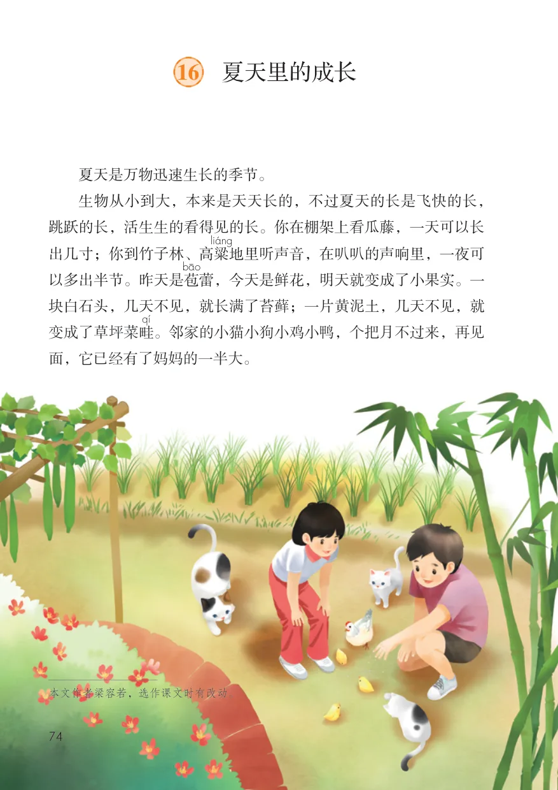
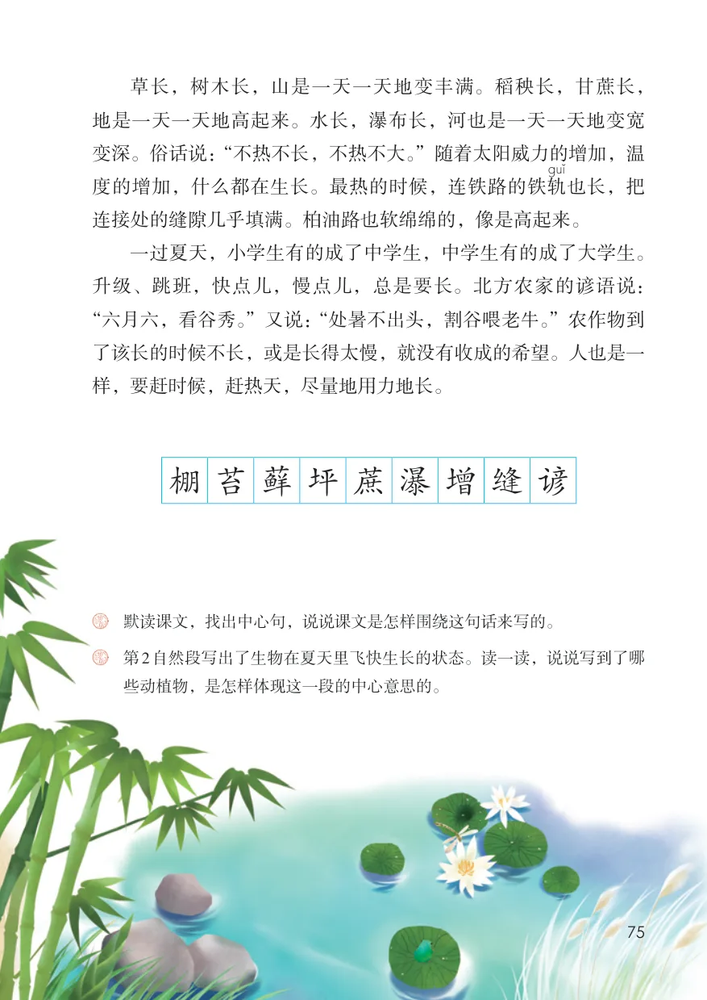
17 盼
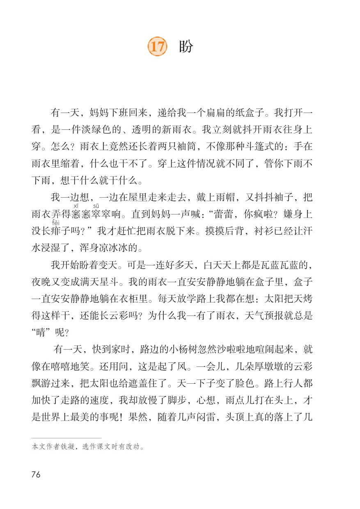
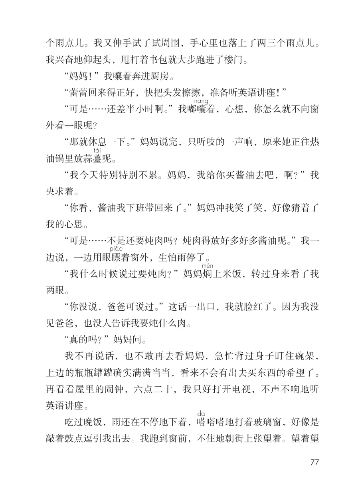
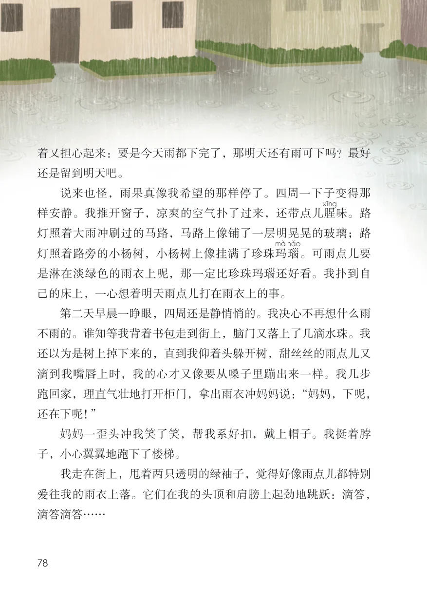
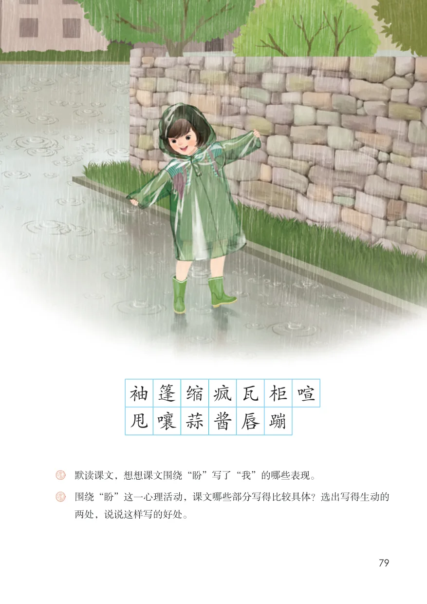
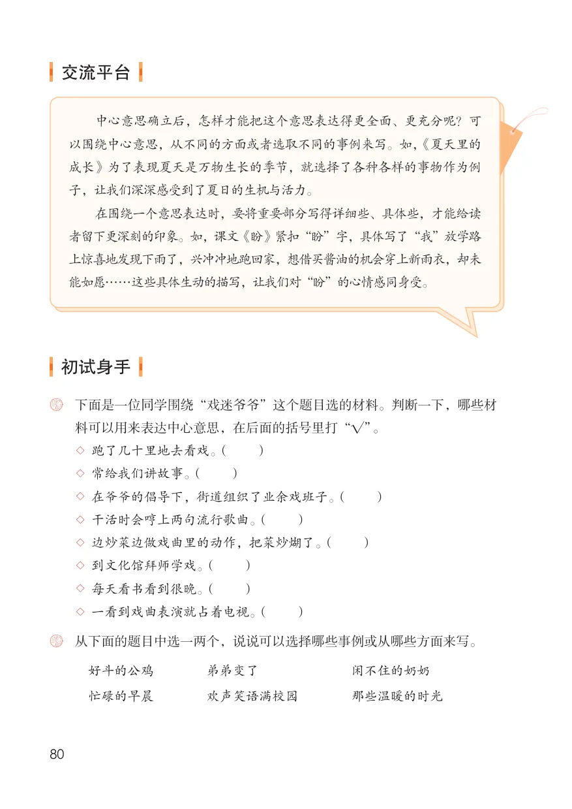
习作例文：爸爸的计划、小站
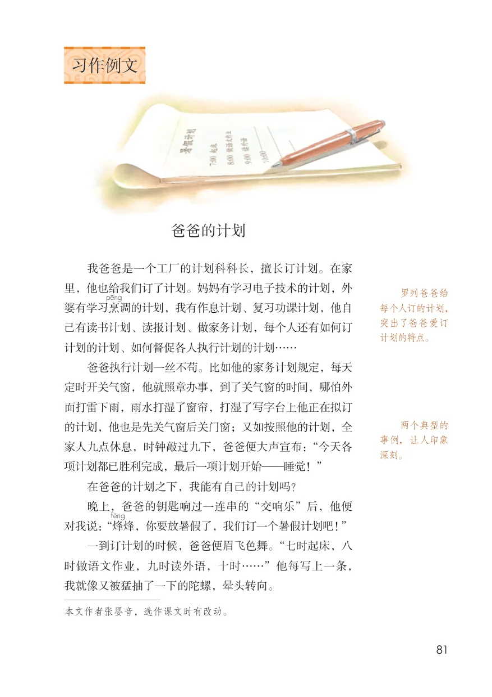
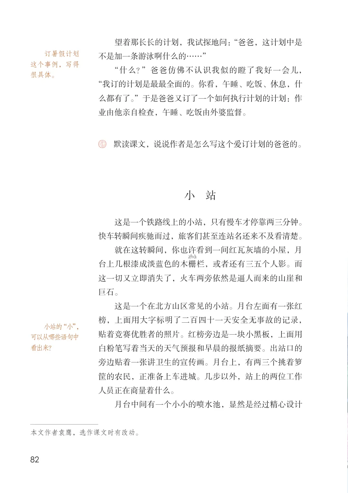
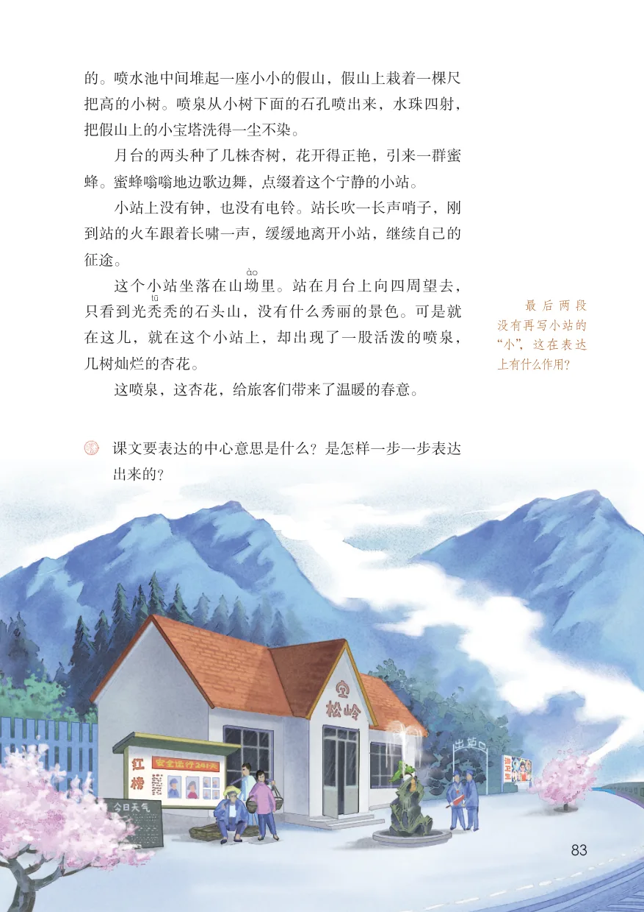
习作：围绕中心意思写
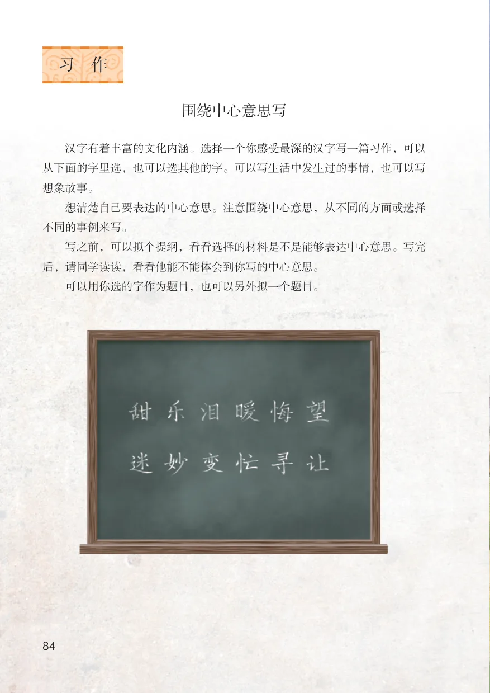